Cada plantilla es una forma completa de editar un video largo: cómo se ve, qué va en cada parte y qué necesitas tener. Elige una y díselo a Claude. Lo que ves aquí son muestras hechas con este mismo sistema.
1
Neón
Video de venta horizontal con gráficos y cifras animadas sobre fondo oscuro de luces naranja y azul, capturas de prueba y recorrido de la plataforma con la persona en una ventanita.
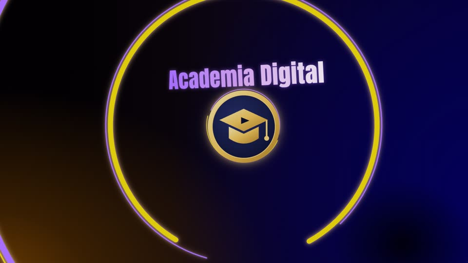
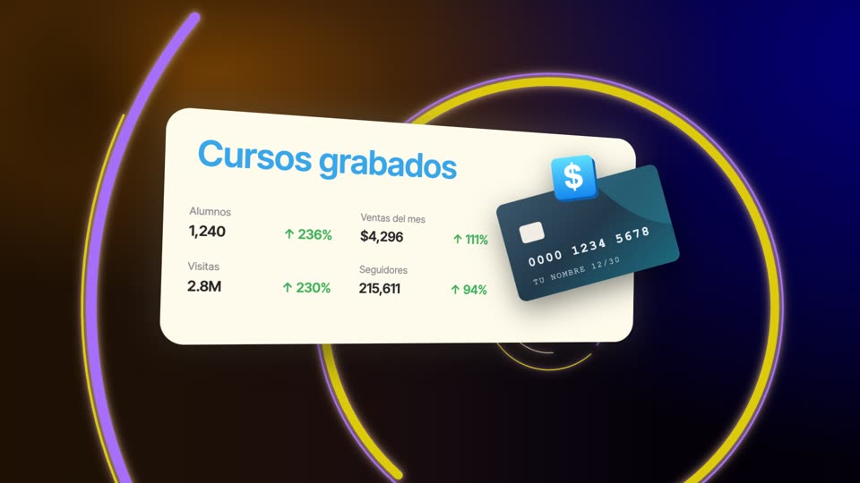
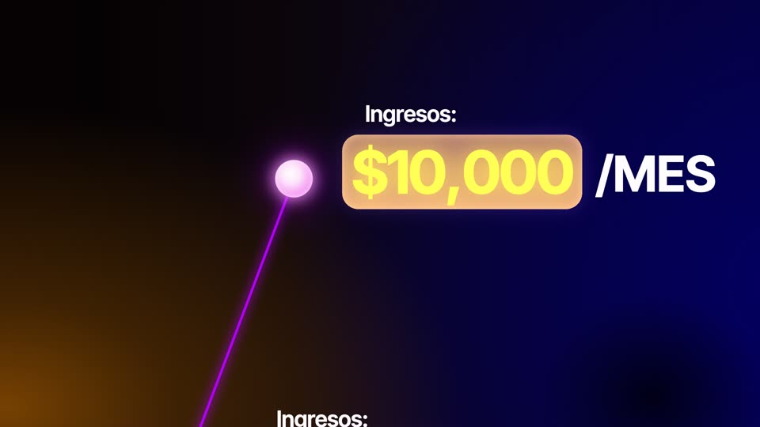
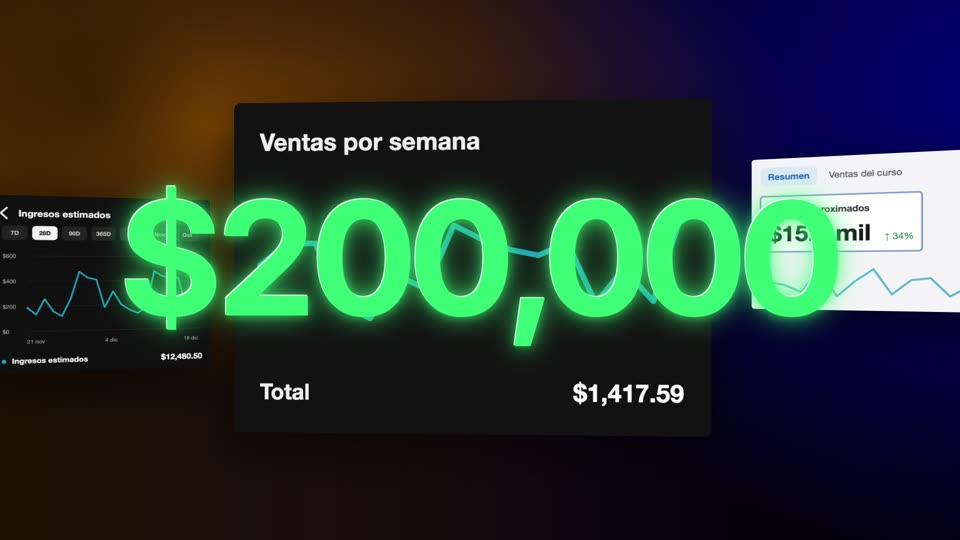
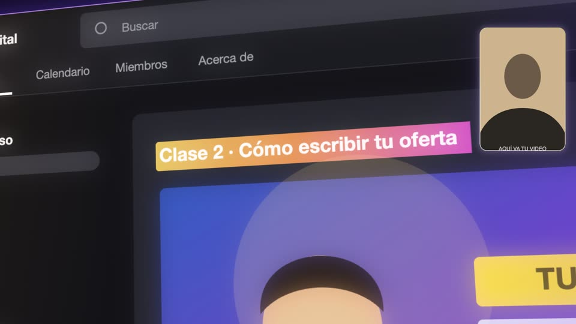
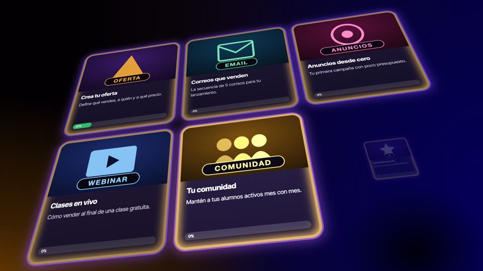
Para usarla, dile a Claude:Edita este video con la plantilla Neón: /ruta/a/mi-video.mp4
Sirve para
Video de venta de una comunidad, curso o membresía
Recorrido de un producto digital por dentro, de 2 a 4 minutos
Presentar resultados con cifras y capturas reales
Lanzamiento con precio de hoy y precio de después
Mejor usa otra si
Video a cámara sin plataforma ni capturas que enseñar: usa la plantilla Cinético
Compilado de testimonios de clientes: usa la plantilla Testimonios
Clases o cursos de 30 minutos o más: usa editor-cursos
Lo que necesitas tener
1 video a cámara, horizontal, grabado con el guion-molde
1 grabación de pantalla de la plataforma, de 1.5 a 2 minutos, en tema oscuro
6 a 10 capturas reales de resultados, con la cifra que se marca en cada una
1 logo redondo con fondo transparente
3 a 5 portadas verticales y 8 miniaturas horizontales de su trabajo
Cifras reales: 2 pilares con sus datos, 2 metas, años de trayectoria, cifra mensual y cifra más grande
3 tomas de apoyo distintas del negocio (video o foto)
6 o más portadas de lo que incluye, con título y una línea
La oferta: precio de hoy, precio de después, enlace, texto del botón y garantía
1 canción con licencia
Datos
Duración ideal: de 3 a 10 minutos
Tiempo de edición: 2 a 3 horas por cada 3 minutos de video, con el material completo (estimado)
Cómo se reparte el video
Gancho5 %
Promesa5 %
Autoridad y prueba6 %
Puente4 %
Recorrido48 %
Niveles4 %
Respaldo9 %
Oferta7 %
Llamado a la acción12 %
Qué pasa en cada parte
Gancho · La pregunta del espectador en una barra de búsqueda, su dolor en una cifra y el logo del producto.
Promesa · Dos tarjetas con los pilares del producto y una gráfica con las metas de dinero.
Autoridad y prueba · Años de trayectoria, capturas reales con la cifra marcada en verde y un contador gigante.
Puente · La pantalla del producto inclinada en 3D y la persona anuncia que lo va a enseñar por dentro.
Recorrido · La grabación de pantalla ocupa el cuadro y la persona queda en una ventanita arriba a la derecha.
Niveles · Escalones que muestran las etapas, con una bolita que salta de una a otra.
Respaldo · Tres tomas del negocio real con rótulo, una cifra con su medio y la rejilla de todo lo que incluye.
Oferta · La persona dice el precio y una tarjeta de inscripción muestra cómo sube después.
Llamado a la acción · La persona a cámara con un botón que recibe el clic, la garantía y la despedida.
Animaciones principales
buscador Barra de búsqueda que nace de una línea y escribe la pregunta del espectador.
tarjeta Tarjeta inclinada con hasta 4 datos, o con una cifra que cuenta hacia arriba.
grafica Línea que sube con un punto brillante y etiquetas de las metas de dinero.
capturas Capturas reales que entran con zoom y llevan la cifra marcada en verde.
contador Cifra verde gigante que cuenta encima de las capturas; una sola por video.
pantalla3d La pantalla del producto como plano inclinado en 3D, con el título resaltado.
pantalla Grabación de pantalla a cuadro completo sobre el fondo neón, con la persona en ventanita.
precio Tarjeta de inscripción con borde de neón y un precio que sube en el botón.
Archivos: plantillas/neon/ESTILO.md (cómo se ve y cómo usarla) · ESCALETA-BASE.md (estructura y guion para grabar) · base/ (proyecto en blanco)
2
Cinético
Video de venta horizontal de una persona a cámara, con palabras gigantes que pasan detrás de su cabeza, frases al pecho, insertos sobre negro y una barra roja de avance.
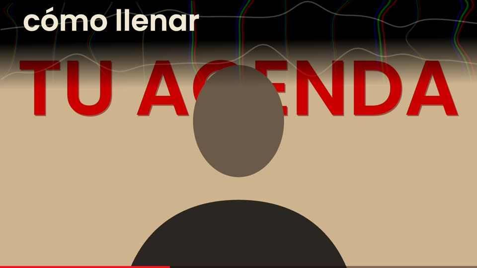
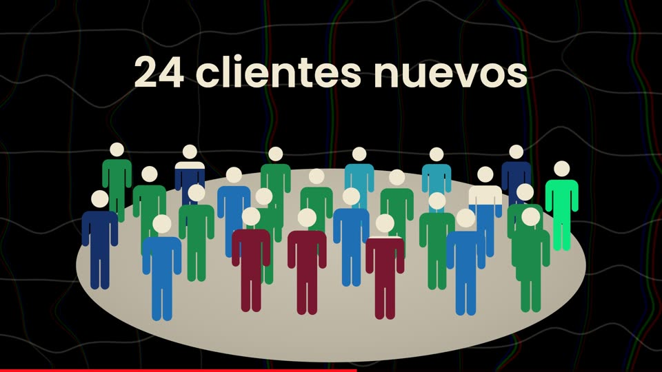
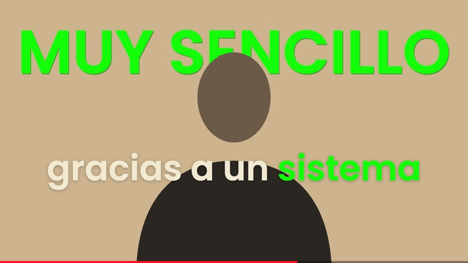
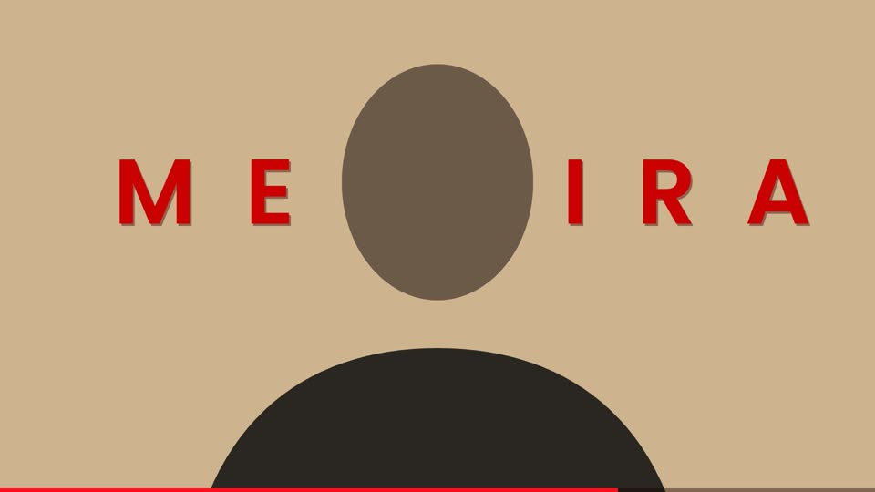
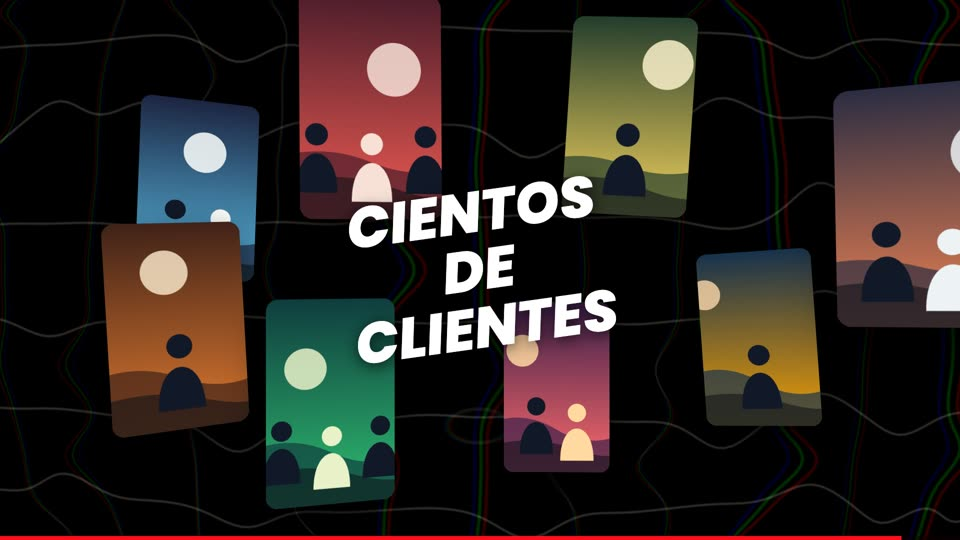
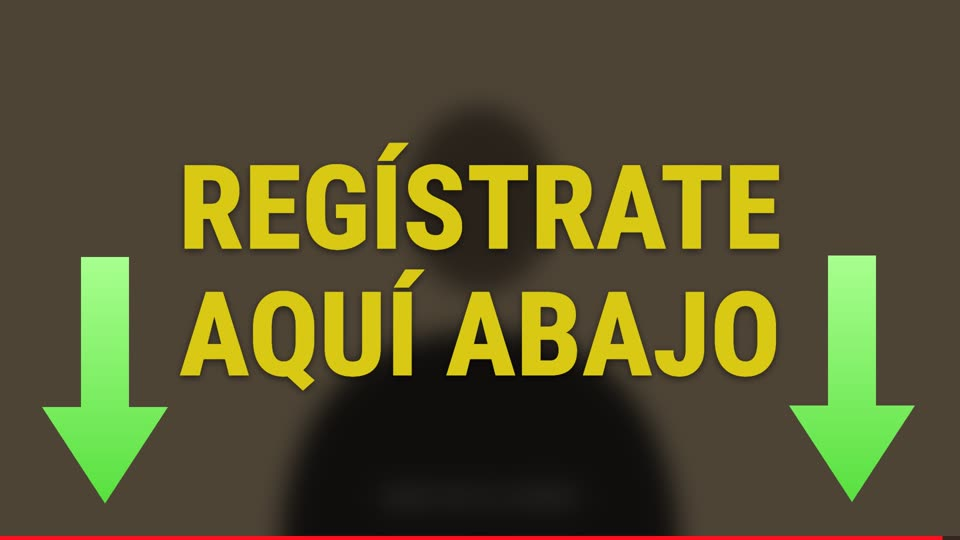
Para usarla, dile a Claude:Edita este video con la plantilla Cinético: /ruta/a/mi-video.mp4
Sirve para
Video de venta de un experto a cámara, sin plataforma que enseñar
Presentar un método o sistema en pasos
Invitar a un evento, clase gratuita o llamada
Video de marca personal con mucho énfasis en las palabras
Mejor usa otra si
Enseñar una plataforma por dentro con grabación de pantalla: usa la plantilla Neón
Compilado de testimonios de clientes: usa la plantilla Testimonios
Videos grabados con fondo recargado o con la persona moviéndose: el texto detrás no se lee
Lo que necesitas tener
1 video a cámara, horizontal, sobre fondo liso, grabado con el guion-molde
Nombre de la persona y de 2 a 4 credenciales cortas
1 logo del programa con fondo transparente
25 a 30 tomas de apoyo distintas por cada 3 minutos (salen de 4 a 6 videos de eventos, oficina o clientes)
8 o más fotos de clientes o eventos, y 3 más para las fotos apiladas
1 a 2 capturas o grabaciones de pantalla
3 cifras reales: la de la promesa, a cuántos ha ayudado y en cuántos lugares
Los 3 pasos del sistema, con nombre de 1 a 3 palabras
1 caso de éxito con nombre, foto o video y resultado
El llamado a la acción exacto y 1 canción con licencia
Datos
Duración ideal: de 5 a 10 minutos
Tiempo de edición: 3 a 4 horas por cada 3 minutos de video, con el material completo (estimado)
Cómo se reparte el video
Gancho y promesa4 %
Presentación y autoridad7 %
Dolor y creencia falsa12 %
Giro y solución15 %
El sistema en 3 pasos23 %
Propósito12 %
Caso de éxito7 %
Qué es y qué no es8 %
Llamado a la acción12 %
Qué pasa en cada parte
Gancho y promesa · Promesa con cifra: reloj detrás, cortina con título, multitud y remate en escalera.
Presentación y autoridad · Nombre de la persona, credenciales en rótulos amarillos sobre tomas de apoyo y fotos de clientes.
Dolor y creencia falsa · Negación en letras separadas, lista de dolores a un lado de la cara y sello NO.
Giro y solución · Palabras gigantes encadenadas, el logo del programa, el signo igual y una captura.
El sistema en 3 pasos · Cada paso con su nombre a un lado de la cara, una toma de apoyo y un inserto con íconos o figuras.
Propósito · Más persona a cámara, con frases al pecho y una ráfaga de tomas de apoyo.
Caso de éxito · Tomas del cliente con su nombre, la captura de su resultado y una pared de fotos.
Qué es y qué no es · Frases tachadas, lo que incluye en lista y la marca de agua del logo detrás.
Llamado a la acción · Logo, llamado amarillo con flechas verdes y cierre mirando a cámara.
Animaciones principales
gigante Palabra gigante que pasa por detrás de la cabeza de la persona.
frase Frase que entra enorme y se achica hasta quedar al pecho.
separadas Una palabra de negación en letras rojas separadas, a la altura de los ojos y detrás.
cortina Cortina negra arriba con el título, con la persona debajo.
figuras Personas dibujadas que aparecen una por una, en multitud o junto a la persona.
escalera Título itálico en tres golpes, cada uno más grande que el anterior.
carrusel Tarjetas de fotos en 3D con texto inclinado encima.
cta Llamado amarillo en dos renglones con flechas verdes que caen.
Archivos: plantillas/cinetico/ESTILO.md (cómo se ve y cómo usarla) · ESCALETA-BASE.md (estructura y guion para grabar) · base/ (proyecto en blanco)
3
Testimonios
Compilado horizontal de testimonios a corte seco: las fuentes se ven tal como vienen, con tomas de evento encima de las voces y subtítulo amarillo solo en la frase clave.
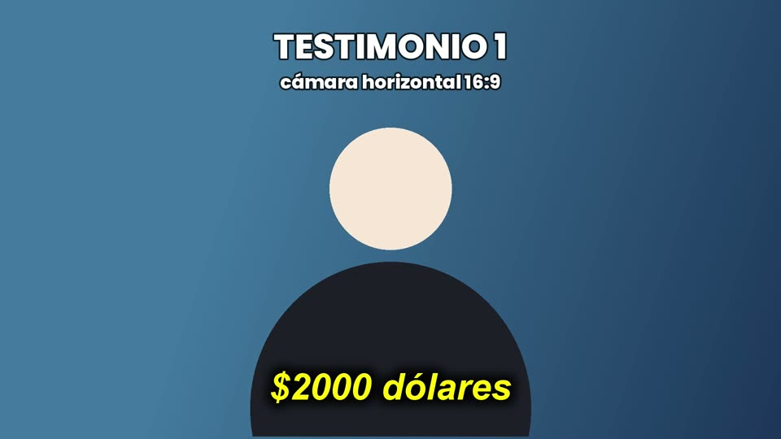
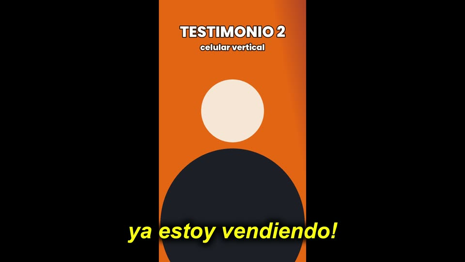
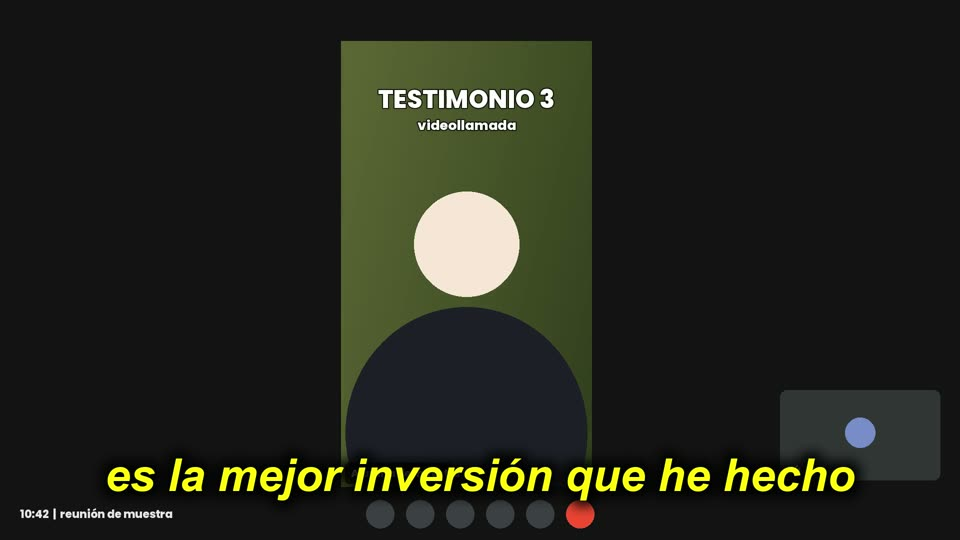
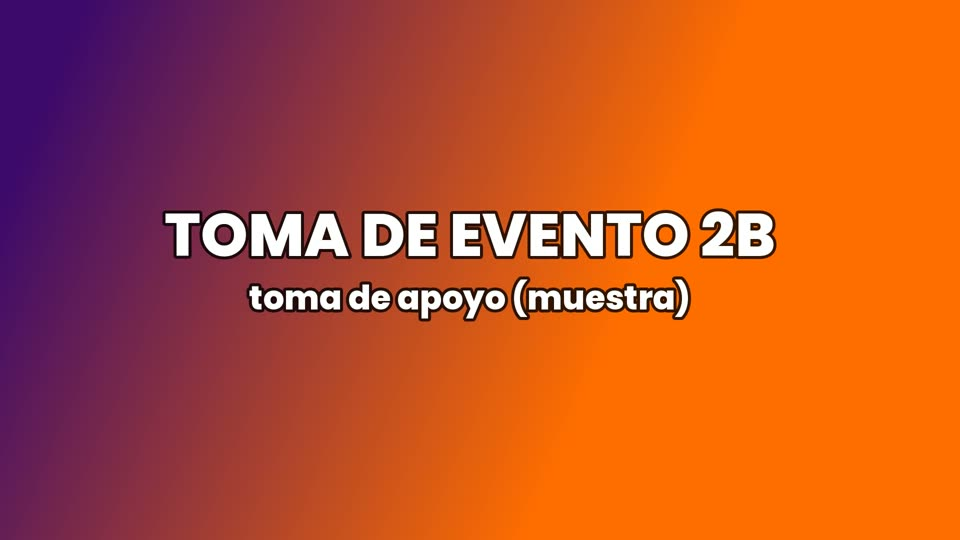
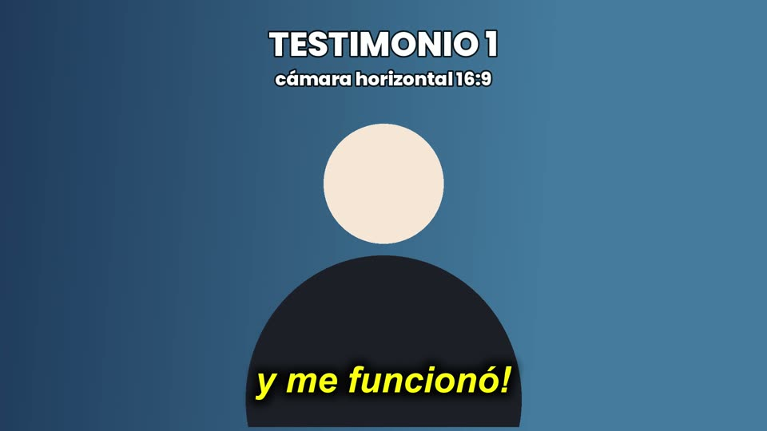
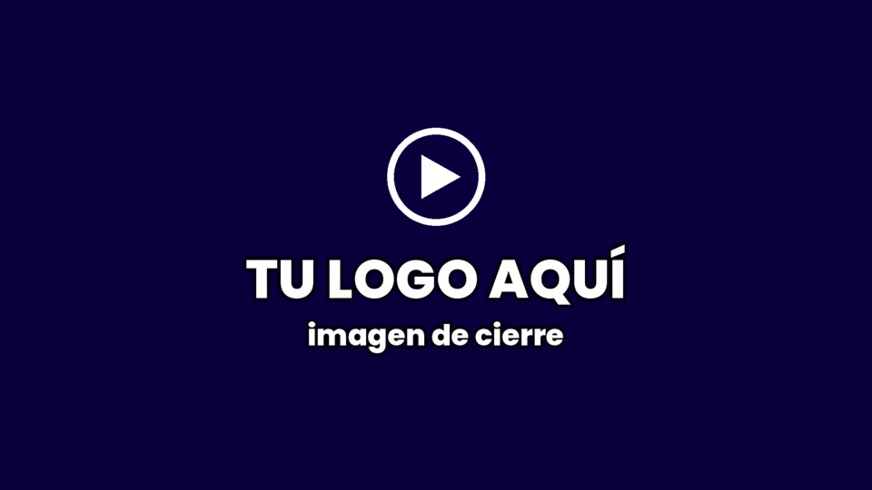
Para usarla, dile a Claude:Arma un compilado con la plantilla Testimonios usando los videos de esta carpeta: /ruta/a/mis-testimonios
Sirve para
Compilado de resultados de alumnos o clientes
Video de prueba social para una página de venta
Resumen de un evento contado por sus asistentes
Juntar testimonios de fuentes muy distintas (videollamadas, celulares, notas de voz)
Mejor usa otra si
Un solo testimonio largo o una entrevista: usa editor-vsl
Video de venta con una persona a cámara: usa la plantilla Neón o Cinético
Casos sin tomas de evento ni otra imagen para cubrir las voces
Lo que necesitas tener
Testimonios completos de 8 a 10 personas, de 1 a 3 minutos cada uno, en video o audio
5 minutos o más de videos de eventos reales, de 4 o más momentos distintos, con su sonido
1 grabación de pantalla compartida con la cifra de ingresos a la vista (10 a 15 s útiles)
1 grabación de pantalla del producto, de 30 s o más
2 a 4 capturas de resultados (opcionales)
1 logo con fondo transparente y, si hay, su cortinilla de sonido
1 canción con licencia
Nombre de cada persona y su permiso para usar el testimonio
Datos
Duración ideal: de 3 a 6 minutos
Tiempo de edición: 2 a 3 horas por cada 3 minutos de video, con los testimonios ya transcritos (estimado)
Cómo se reparte el video
Gancho9 %
Puente2 %
Testimonios70 %
Prueba8 %
Remate8 %
Cierre3 %
Qué pasa en cada parte
Gancho · 3 o 4 frases estrella, una por persona, cada una con su subtítulo amarillo y sin tomas de apoyo.
Puente · 3 tomas de evento con su propio sonido, sin voz.
Testimonios · Cadena de testimonios: la voz entra sobre tomas de evento, la persona da la cara y vuelven las tomas.
Prueba · Ráfaga de pantallas del producto y la pantalla compartida con la cifra de ingresos.
Remate · Racha de tomas de evento con la música arriba y una última frase corta.
Cierre · Corte seco al logo, fijo 6 segundos.
Animaciones principales
testimonio Bloque con la voz completa de una persona; la imagen es ella o las tomas de apoyo que la tapan.
testimonio › subs Subtítulo amarillo de un renglón, solo en el remate de la frase; la cifra va sola en su tarjeta.
testimonio › apoyo Tomas de evento de 1.0 a 1.7 s, en rachas, encima de la voz y sin cortarla.
testimonio (formato vertical) Video de celular completo, centrado sobre negro puro.
testimonio (formato llamada) Videollamada a pantalla completa con toda su interfaz, sin recortar.
apoyo Bloque puente: tomas de evento seguidas con su propio sonido, sin voz.
imagen Imagen fija: el logo de cierre o una captura de ingresos, con acercamiento lento.
Archivos: plantillas/testimonios/ESTILO.md (cómo se ve y cómo usarla) · ESCALETA-BASE.md (estructura y guion para grabar) · base/ (proyecto en blanco)
+
Crear una plantilla nueva
A partir de un video o de una imagen que te guste.
Dile a Claude:Crea una plantilla larga nueva a partir de este video: /ruta/al/video.mp4
Claude estudia el video cuadro por cuadro (o la imagen) y escribe la ficha: ritmo, colores, tipografía y cada animación con sus medidas.
Programa las animaciones y te enseña fotos de cómo quedaron.
La agrega a este menú con su número, su estructura y su proyecto en blanco.
El video que pases solo se usa para estudiarlo en tu computadora. La plantilla queda guardada como archivos de texto y código: después ya no hace falta el video.